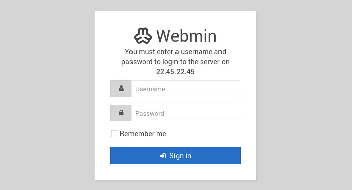
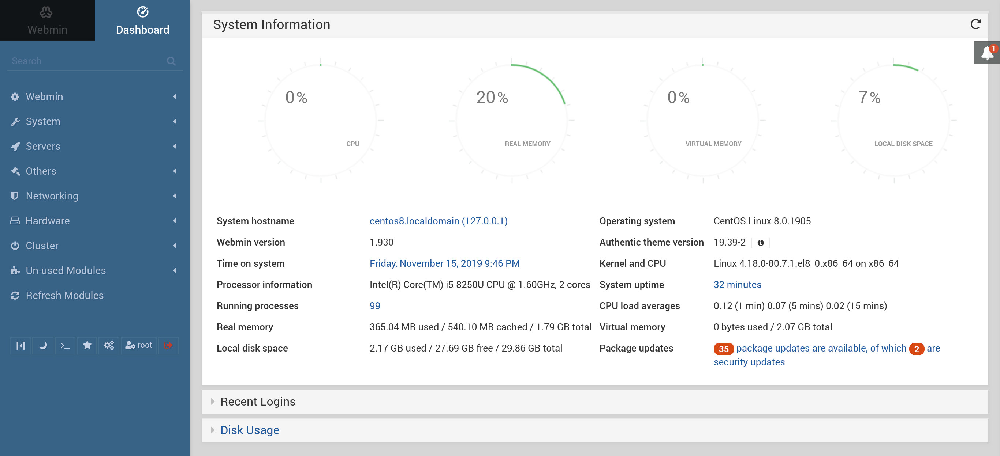

在 CentOS 8 上安装 Webmin
Webmin 是一个开放源代码控制面板，允许您通过易于使用的 Web 界面管理 Linux 服务器，您可以管理用户，组，磁盘配额，创建文件和目录以及配置最受欢迎的服务，包括 Web ， FTP ，电子邮件和数据库服务器。
本教程说明了如何在 CentOS 8 上安装 Webmin 。
先决条件
为了能够安装软件包，您需要以 root 用户或具有 sudo 特权的用户身份登录。
在 CentOS 上安装 Webmin
在 CentOS 8 上安装 Webmin 的推荐方法是启用 Webmin 存储库并使用软件包管理器 dnf 安装 Webmin 软件包。
执行以下步骤在 CentOS 上安装 Webmin ：
-
打开您喜欢的文本编辑器并创建存储库文件：
sudo nano /etc/yum.repos.d/webmin.repo将以下内容粘贴到文件
/etc/yum.repos.d/webmin.repo中：[Webmin] name=Webmin Distribution Neutral #baseurl=https://download.webmin.com/download/yum mirrorlist=https://download.webmin.com/download/yum/mirrorlist enabled=1保存文件并关闭编辑器。
-
使用以下
rpm命令导入 Webmin GPG 密钥：sudo rpm --import http://www.webmin.com/jcameron-key.asc -
通过键入以下命令安装最新版本的 Webmin ：
sudo dnf install webmin该命令自动解决所有依赖关系。安装完成后，将显示以下输出：
Webmin install complete. You can now login to https://your_server_ip_or_hostname:10000/ as root with your root password.Webmin服务将自动启动。
至此，您已经在 CentOS 8 服务器上成功安装了 Webmin 。
调整防火墙
默认情况下， Webmin 在所有网络接口上的 10000 端口上侦听连接。
为了能够从 Web 浏览器访问 Webmin 界面，您需要在服务器的防火墙中打开 Webmin 端口。
运行以下命令以允许端口 10000 上的流量：
sudo firewall-cmd --zone=public --add-port=10000/tcp
sudo firewall-cmd --runtime-to-permanent
访问 Webmin Web 界面
现在，在 CentOS 服务器上已安装 Webmin ，请打开浏览器，然后键入服务器的主机名或公共 IP 地址，然后键入 Webmin 端口 10000 ，如下所示：
https://your_server_ip_or_hostname:10000/
浏览器会显示警告证书无效，因为默认情况下， Webmin 使用不受信任的自签名 SSL 证书。
使用您的 root 用户凭据登录到 Webmin Web 界面：

登录后，页面被重定向到 Webmin 仪表板，该仪表板提供有关系统的基本信息。

从这里，您可以根据需要开始配置和管理 CentOS 8 服务器。
结论
您已经在 CentOS 8 机器上成功安装了 Webmin ，您可以开始通过 Webmin 的 Web 界面管理服务器了。
要了解有关 Webmin 的更多信息，请访问其官方文档页面。